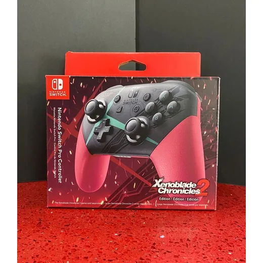
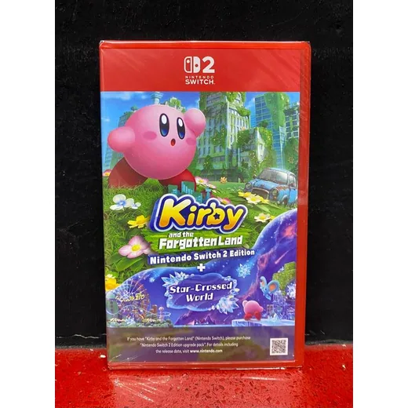
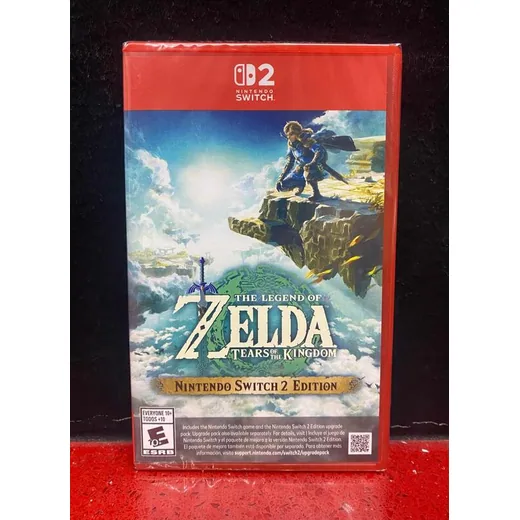
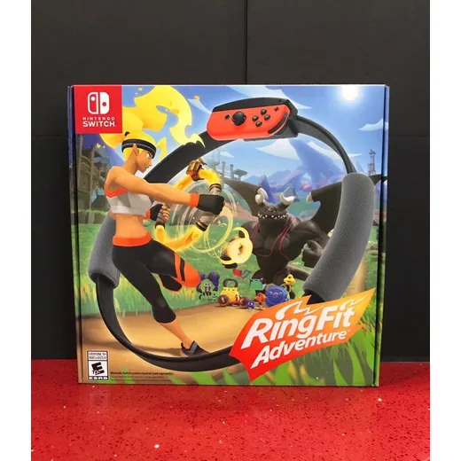
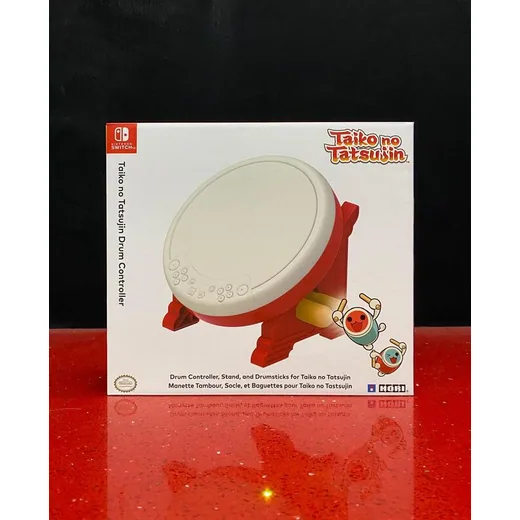
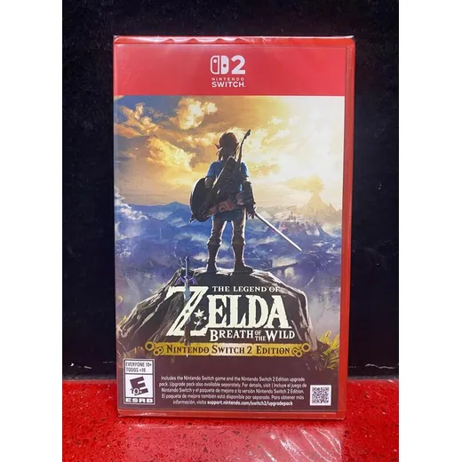
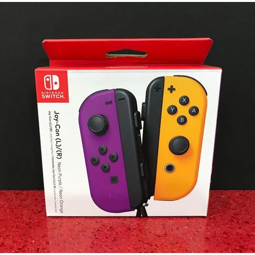
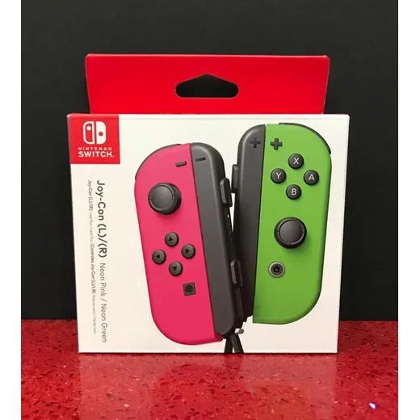

Nintendo
Switch Control PRO Inalambrico Xenoblade Nintendo
L 2,000
En Game Station
Precio en cada tienda
| Tienda | Precio | Antes | Disponibilidad | |
|---|---|---|---|---|
| Game Station | L 2,000 | — | Disponible | Ver en tienda › |
Precios referenciales tomados de cada tienda el 14 de noviembre de 2026. El precio válido es el que muestra la tienda al comprar.
Otros juegos y controles Nintendo

Switch 2 · Kirby Forgotten Land + StarCrossedL 2,000En Game Station
Switch 2 · Zelda Tears of the KingdomL 2,000En Game Station
Switch Ring Fit AdventureL 2,000En Game Station
Switch Control Taiko no Tatsujin Drum HoriL 2,000En Game Station- Switch 2 · Donkey Kong BananzaL 1,900En Game Station

Switch 2 · Zelda Breath of the WildL 1,900En Game Station
Switch Control JoyCon L/R Neon Morado Naranja NintendoL 1,900En Game Station
Switch Control JoyCon L/R Neon Rosa/Verde NintendoL 1,900En Game Station